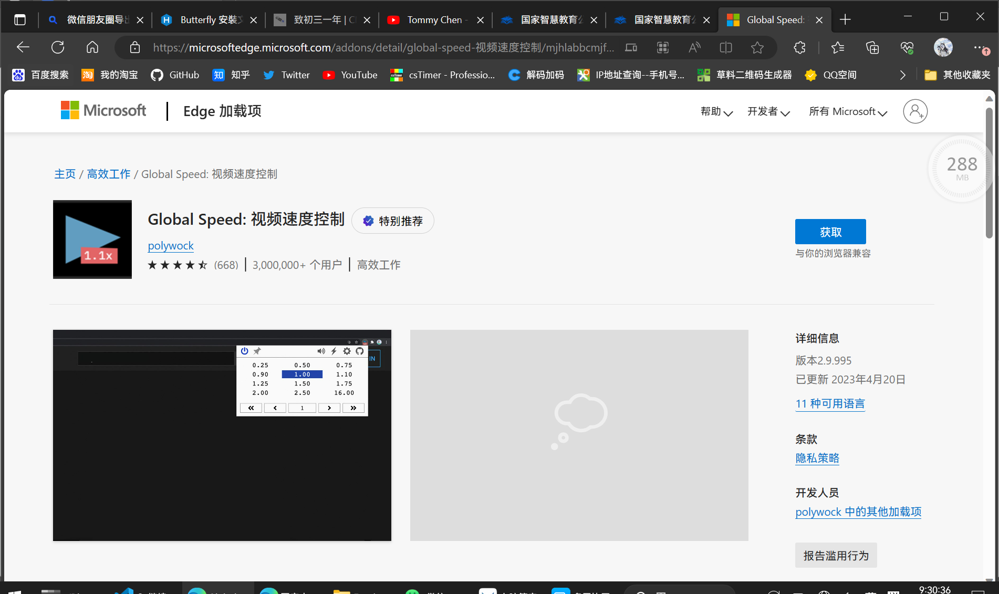
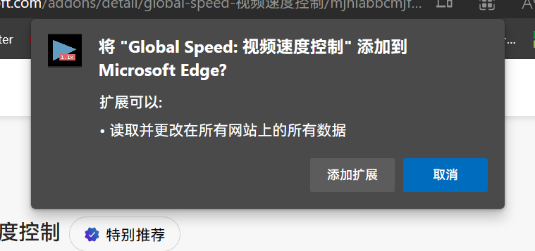
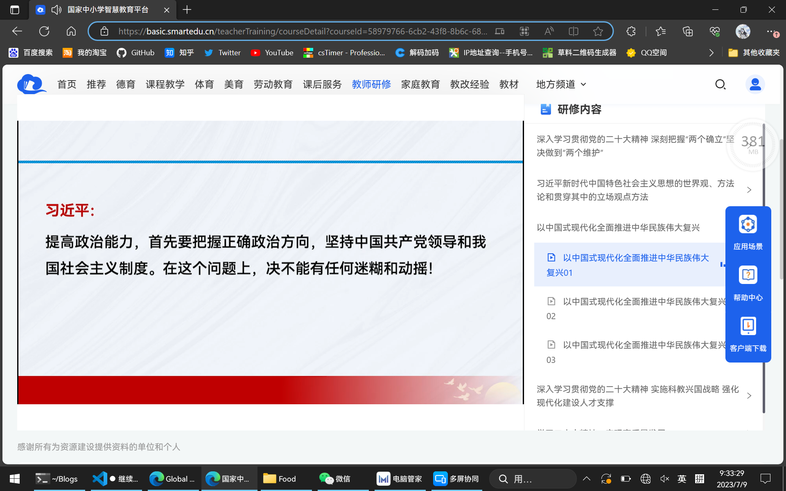
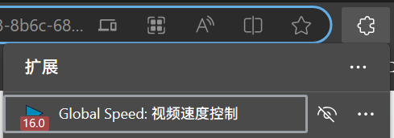
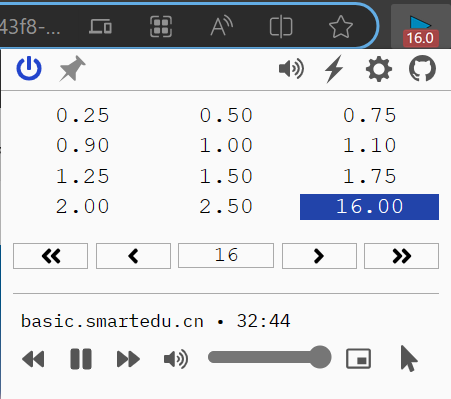
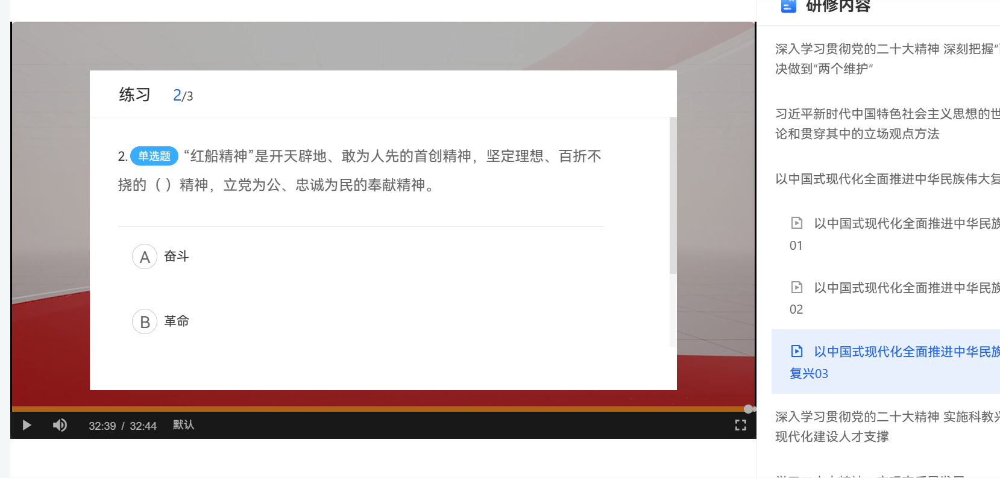

继续教育快速刷视频教程
背景
众所周知，许多体制内的人时不时都要用自己宝贵的时间曲刷一堆无用的学习视频，比如继续教育，教师假期研修等。这时候，就需要一种方法，以最快的速度刷完视频完成任务
准备工具
1，Chromium系浏览器（推荐Chrome或Edge，本文以Edge示例）
2，最好有一把梯子，在Chrome扩展商店下插件
3，一个人
Step1
或者Chrome插件下载页面，搜索Global Speed

点击获取，如果有弹窗，全部允许

Step2
打开你要学习的视频页面（这里以国家中小学**平台为例）

点击网址栏右边的插件图标，找到”Global Speed”

点击”Global Speed”，然后点击你想要的速度（由于HTML5限制，最高只有16倍速）

Step3
大功告成，坐等结束！
提醒
1，一些网站（比如上文示例网站）要保持标签页显示，不能最小化，也不能让其他窗口最大化，但是可以把它拖到最底部，否则会自动暂停
2，现在很多网站会有答题环节，需要注意

3，已知某些网站的计时方法比较特殊，速度太快会无效（学习公社）
4，已知某些网站在一定时间后会强制休息（学习公社）
5，可以试一下多开几个浏览器一起看，但是一些网站只能单设备登录
6，如果用Chrome的话，准备好梯子，否则商店打不开
以上内容会不断更新，有问题欢迎反馈！
 wechat
wechat alipay
alipay
评论